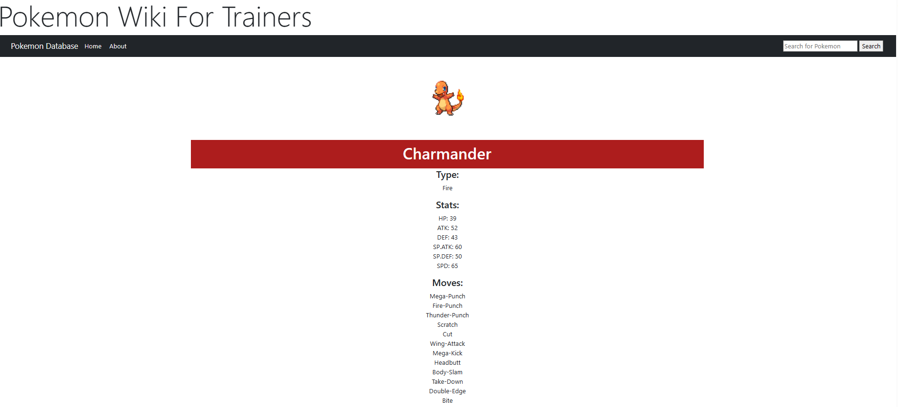

Growth
Lessons Learned (as a Graduating Student)...
In my first year of the BIT program there was an assignment that required us to meet with students in their final term of the same program. We were to ask them questions about their experience in the program and what they would have done differently if they could go back in time. I remember one of the students telling me that they wished they had taken the time to learn more about the different programming languages that we were taught in the program. I took this advice to heart and made sure that I was able to learn as much as I could about the different languages that we were taught. I am glad that I did this because it has made me a more versatile programmer and has given me the ability to adapt to different situations. I am now able to learn new languages and concepts much faster than I was able to before. I am very proud of my growth as a programmer and I am excited to continue learning new things in the future.
Inspire Conference 2023...
The Inspire Conference of 2023 was one that was significantly improved from the last one I attended. The conference in 2022 was hosted online and was not as engaging as the one in 2023. The conference in 2023 was hosted in person and had a lot of activities that were very engaging. The variety of content that was displayed across the workshops and presentations was greatly improved from the previous year. The conference was also much more organized and the networking lounge was a great place to meet people from different companies. I was able to meet a lot of people from different companies and was able to get a lot of information about the companies that I was interested in working for. I was able to get a lot of information about the application process for these companies and was able to get a lot of advice from the people I met. I am very glad that I attended the conference in 2023 and will be actively seeking opportunities to attend similar conferences in the future.
Impromptu Talks and overcoming my fear of public speaking...
A task that was required of students this term was to give an impromptu talk about a topic that we were given. I was given the topic of "What was your biggest mistake?" and immediately was trying to think of a mistake that I could talk about. Fortunately, I was able to think on my feet and decided to speak about my first experience of post secondary school at the University of Manitoba. I went on to talk about how I was not prepared for the workload and how I was not able to manage my time properly. I was able to talk about how I was able to overcome this mistake by learning from it and applying the lessons I learned to my current situation. I was able to talk about how I was able to manage my time better and how I was able to get better grades in my courses. I was very proud of myself for being able to think on my feet and give a talk that was well received by my classmates. I was happy to have been given an assignment that challenged me and was very pleased with my overall performance.
New Skills
Amazon Web Services (AWS) Cloud Academy...
Being a new mandatory course offered in the BIT program, it was tough to expect a structure that was tried and tested. However, my experience was actually quite positive considering even the instructors unfamiliarity with the content. Luckily, the course was taught through online videos and labs, so it already had structure and content that was very well organized. By the end of the course, students were able to get a certification that was recognized by Amazon. I was able to get this certification and am very proud of my accomplishment. I am glad that I was able to learn about cloud computing as it is a very important skill to have in the IT industry. I am looking forward to learning more about cloud computing and am excited to see how it will be used in the future.
Customer Experience and User Experience Prototype...
In our CX/UX course, our 11th assignment was to create a prototype of a Banking app for a fictional bank. We were given a scenario where we had to create a prototype that would allow a user to transfer money from one account to another. We were also given a lot of freedom in how we wanted to design the prototype and were given a lot of resources to help us such as design frameworks. The framework provided was the Google design framework, which allowed for a simple and visually appealing appearance. I was able to create a prototype that was very user friendly and was able to showcase my skills prototype creation. I was able to incorporate a slider to complete the transfer which was a very unique feature as stated by my instructor. If I am to seek a job in front-end design, I will be able to use this prototype as a portfolio piece to showcase my skills.
Kali Linux Penetration Testing (Web Security)...
The Web Security course opened my eyes to the various threats and lack of security that outdated websites show today. In class, we followed along with our instructor to test different ways of gaining root/admin access to websites created for testing purposes. We were able to use Kali Linux to test the security of these websites and were shown the pre-made scripts and attacks that hackers have available to them. It was very interesting to see how easy it was to gain access to these websites and how much damage could be done if a hacker were to gain access to a website. I am glad that I was able to learn about these threats and how to prevent them from happening. I am thankful for this knowledge as it will help me in the future when I am creating websites as well as being able to identify threats in websites that I use. I can better protect myself and others from these threats now that I am aware of them.
Programs and Systems
Full-Stack Programming in Ruby (Pokemon Database Website)...
The Pokemon Database website was a project that I worked on in my Web Programming course. The website was created using Ruby on Rails and was a full-stack application. The website was created to allow users to search for Pokemon and view their stats. The website also allowed users to search for and filter through the different parameters such as Pokemon type and name. Getting to participate in a group project was a great experience as it allowed me to work with other people and learn from them. I was able to learn a lot about Ruby on Rails and how to create a full-stack application from beginning to end. Ruby on Rails as a framework is quite simple to work with and in my opinion is a great framework for beginners to learn. I am glad that I was able to learn about Ruby on Rails and am excited to see what other projects I can create with it whether it be personal or professional.
Data Structures and Algorithms (Maze Search Methods)...
The screenshot above is a small peek of a program we developed in our Data Structures and Algorithms class. It shows the uses of Queues and Stacks in Breadth-first search and Depth-first search approaches respectively. Breadth first searches are used to search for the shortest path to a goal state while Depth first searches are used to search for any path to a goal state. The program was created to solve a maze using these two approaches and was a great way to learn about the different ways of storing data and utilizing that method in a specific way such as searching a maze for an exit. Data structures and algorithms are very important to know as a programmer, so I am glad to have learned the incredibly complex concepts in this course. It was satisfying to see them work and I am excited to see what other programs I can create using the concepts I learned in class.